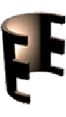

Boosting StoRM Convergence with Metric Guidance and Non-uniform State-Sampling for Optimal Dereverberation
Chandra Mohan Sharma, Arnab Kumar Roy, Anupam Mandal, Prasanta Kumar Ghosh, Prasanna Kumar KR
Clean Speech
Reverbed Speech
Dereverbed Speech